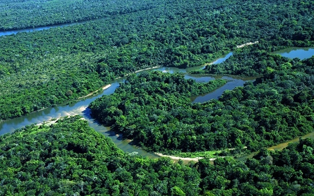

Ilha Do Bananal

O clima tropical quente semiúmido, com temperaturas máximas de 38 °C nos meses de agosto a setembro e mínimas de 22 °C em julho, predomina. Duas estações são nitidamente marcadas na ilha: o inverno, de novembro a abril, em que predominam as chuvas, e o verão, de maio a outubro, na qual ocorre o período da seca. A umidade relativa do ar registrada nas estações mais definidas gira em torno dos 60% em julho e 80% nas épocas chuvosas.
Durante os meses de janeiro a março, época de cheia do rio Araguaia, parte da ilha permance inundada. As chuvas desse período correspondem a cerca de 50% do total anual.
A ilha é banhada pelos rios Araguaia, Javaés, Jaburu, Riozinho, Urubu, Randi-Toró, Barreiro, Vinte e Três e Mururé
Voltar